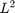

finiteElements
Abstract class to build finite elements.
Copy behavior = handle.
Contents
Public, constant Properties:
- wrongNumberInputs (MException)
- wrongNumberOutputs (MException)
- wrongFormat (MException)
- wrongClass (MException)
- wrongSize (MException)
Public, constant abstract property:
- idx (double)
Public methods
The methods assema and convection are actually not abstract, but behave like abstract functions.
- errorInd
- assema IN:self,gridd,double|char|function_handle, double|char|function_handle, double|char|function_handle
The assemble method for finite elements. It assembles the Stiffness matrix K, the Mass Matrix M and the RHS vector F in sparse format. If you call it with two output arguments, then S = K+M.
Call:
[K,M,F] = finiteElements.assema(grid,c,a,f)
[S,F] = finiteElements.assema(grid,c,a,f)- convection IN:self,gridd,double|char|function_handle
Method that computes the convection matrix.
Call:
B = finiteElements.convection(gridd,bvec)
- sparsityPattern IN:self,grid[,double[,double,double,double,double]] OUT:double
Method that computes the sparsity pattern of the system matrices.
Call:
B = finiteElements.sparsityPattern(gridObject)
B = finiteElements.sparsityPattern(gridObject,A)
B = finiteElements.sparsityPattern(gridObject,K,M,C,Q,H)A should be obj.A, intesionally for defining sparsity patterns for systems of PDEs K,M,C,Q,H should be the matrices from a call of obj.assema, obj.assemb and obj.convection The empty call computes all relevant matrices internally.
- sourceTermMatrix IN:self,gridd OUT: double
Computes the matrix M such that F = M*f, where f ist a vector of length #Elements which contrains the values of the source f in the centers of each element. This is usefull if you want to calculate the source from a given vector, e.g. when solving coupled systems where the solution of one equation is the source for another equation.
Call:
M = finiteElements.sourceTermMatrix(gridd)
- errorInd IN:self,gridd,double,double,double[,double,double,double] OUT:double
Call:
errorPerElement = finiteElements.errorInd(grid,u,c,a,f[,alfa,beta,m])
Method that computes the error for every element. The measure is taken from pdetool. Note that errorInd works only for scalar PDEs. For Systems, call it N times with the source and solution component. Note that this may not really helpfull when applying on coupled systems on non linear PDEs.
Static methods with Access = public
- stiffSpring IN:double OUT:double
Computes a guess for the stiff-spring coefficient L = obj.stiffSpring(M). M should be the Systems Matrix, e.g. M = K+M+C (C) 2013 by Uwe Prüfert
Static methods with Access = protected
- localErrorL2 IN:self,double,double,double OUT:double
localErrorL2 is made for local error measurment. It may be overwritten in higher order FE classes. However, for linear FEs it works for every dimension localErrorL2 computes the  -norm of f-a*u Evaluates f-a*u in the center of Element and multiplies with area. Result is per element. This should work for all linear P1 elements in 1D--3D. May be overwritten in P2 etc. classes.
Call:
error = obj.localErrorL2(u,a,f).
Note that u, a and f must be vectors or scalars, not function handles.
- aCoefficients IN:grid1D,double|char|function_handle, double|char|function_handle,double|char|function_handle OUT:double,double,double
Methods that compute the numerical values of the coefficients c, a, and f from various formats.
Abtract methods with Access = public
- createMatrixEntries IN:self,grid1D,double|char|function_handle, double|char|function_handle,double|char|function_handle
Method that computes the entries uses by assema method. Arguments are the grid, and the coefficients c, a, f.
- createConvectionEntries IN:self,grid1D,double|char|function_handle OUT:double
Method that computes the entries uses by convection method. Arguments are the grid, and the coefficient b.
Static abtract methods with Access = public:
- makeIndex IN:double,double OUT:double,double,double
Method that computes a index structure to be uses to create sparse matrices within assema, etc.
- assemb IN:grid1D OUT:double,double,double:double
Method that assembles the boundary matrices and vectors.
Call:
[Q,G,H,R] = finiteElements1D.assemb(grid1D)
Static abtract methods with Access = protected:
- fluxThroughEdges IN:gridd,double,double OUT:double
- fluxJumps IN:gridd,double,double OUT:double
- makeJ IN:grid1D OUT double
Computes the value of the Jacobian determinant.